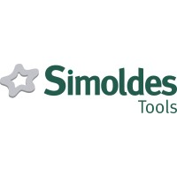

Trabalho Académico & Prático
Projetos & Laboratório

Projeto Final de RSI — Moliceiros da Ria
Infraestrutura empresarial completa para a Moliceiros da Ria. Planeamento multi-site com VLANs, OSPF, VPN site-to-site e acesso remoto, VoIP com Asterisk, DHCP, DNS, NAT, monitorização com Zabbix e Grafana, automação de backups e integração com Docker. Projeto de conclusão do CTESP.

Infraestrutura Empresarial — Estágio
Desenvolvimento de uma infraestrutura de rede empresarial virtualizada em contexto de estágio curricular na Simoldes Tools. Trabalho autónomo em laboratório próprio com foco em administração de sistemas, monitorização e segurança defensiva. Detalhes técnicos omitidos por confidencialidade.

Administração de Sistemas
Dois projetos desenvolvidos individualmente. No primeiro, fork de um repositório com erros intencionais — correção de credenciais expostas e configuração de NGINX via Terraform e Ansible. No segundo, provisionamento de uma máquina Linux no Azure como servidor DHCP, totalmente automatizado.

Sistemas Operativos — Semáforos
Sistema distribuído que simula o controlo de semáforos em cruzamentos. Comunicação cliente-servidor via sockets, multithreading e sincronização de estados entre interseções, evoluindo para uma arquitetura distribuída com gestão de concorrência em ambiente Linux.

Sistemas Operativos — Shell Script
Sistema automatizado de backups em Shell Script para servidores web. Criação de backups comprimidos (.tar.bz2), restauro, listagem e eliminação, gestão automática com máximo de 5 backups por site, menu interativo, envio de relatórios por email e verificação de permissões de root.

Programação Aplicada — Weather2Travel
Aplicação gráfica em Python que combina RFID com API meteorológica. Login com cartão RFID, previsão do tempo em tempo real via API do IPMA, interface com CustomTkinter e base de dados de utilizadores. Integração de hardware, software e dados externos numa solução funcional.

Sistemas Distribuídos — Microserviços
Sistema distribuído baseado em microserviços para gestão de pedidos de compra. Serviços independentes de Orders, Payments e Notifications com API Gateway, comunicação via HTTP REST, monitorização com Prometheus, Grafana e Loki, orquestrado com Docker Compose.

VoIP — Asterisk, DNS & RADIUS
Infraestrutura completa de VoIP com servidor Asterisk PBX, DNS via Bind9, autenticação com FreeRADIUS e terminais SIP. Tentativa de integração com Kamailio. Sistema semelhante a ambientes empresariais reais, com foco em segurança e escalabilidade.

Serviços Telemáticos
Projeto da cadeira de Serviços Telemáticos. Configuração e análise de serviços de comunicação em rede, protocolos de transporte e integração de serviços telemáticos em ambiente de laboratório.

Fundamentos de Rede — Rede Universitária
Implementação de uma rede universitária segmentada por departamentos. Sub-redes IPv4, configuração de DHCP, DNS, NAT, FTP, servidor web e de email, roteamento com RIP e interligação entre departamentos e datacenter central.

Planeamento de Redes — BikeParts
Planeamento e implementação de infraestrutura de rede empresarial para a BikeParts, distribuída por múltiplos edifícios e um datacenter. VLANs por departamento, roteamento dinâmico OSPF, NAT, DHCP, DNS, redes guest isoladas e arquitetura em camadas simulada em GNS3.

Gestão de Redes — Zabbix vs Prometheus
Análise comparativa entre Zabbix e Prometheus para monitorização de infraestrutura. Estudo de protocolos como SNMP, ICMP e APIs, arquitetura e desempenho de ambas as soluções, com implementação prática do Zabbix e configuração de alertas e métricas.
// adicionar projeto